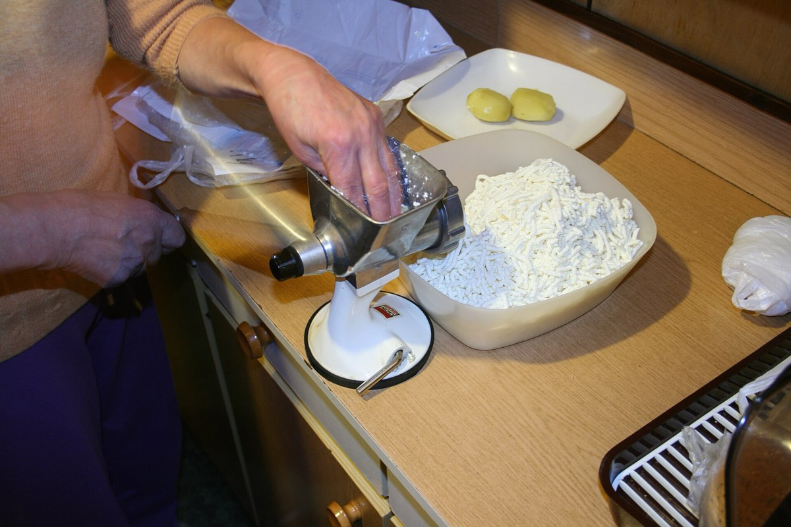
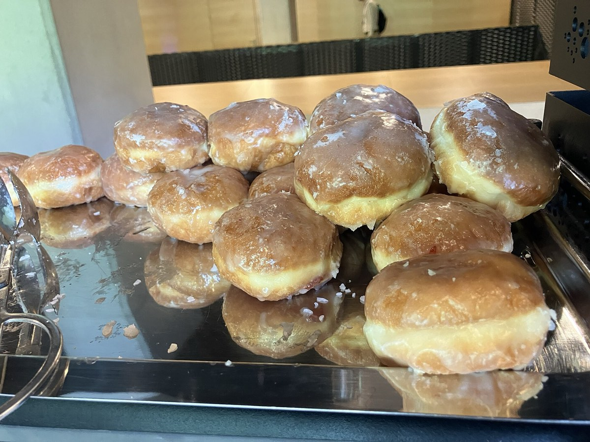
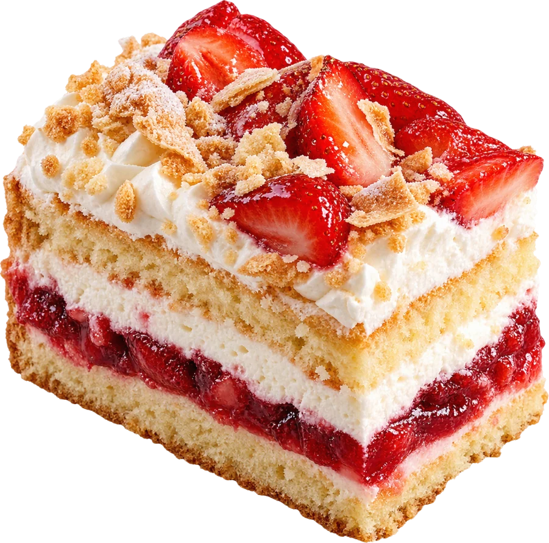
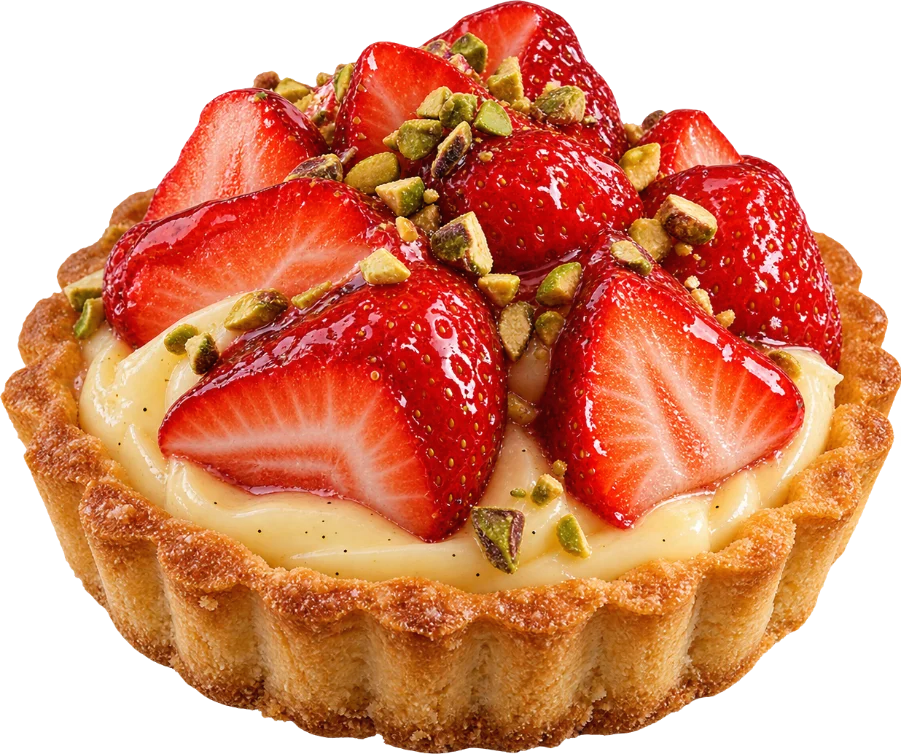
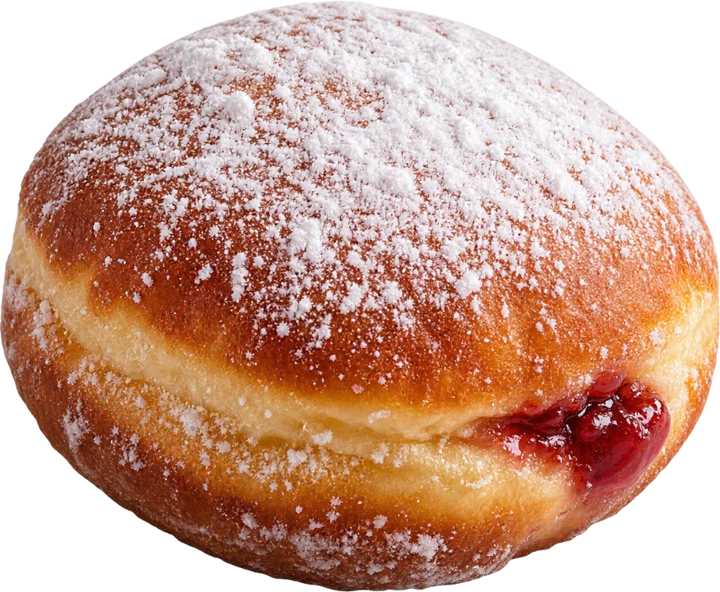
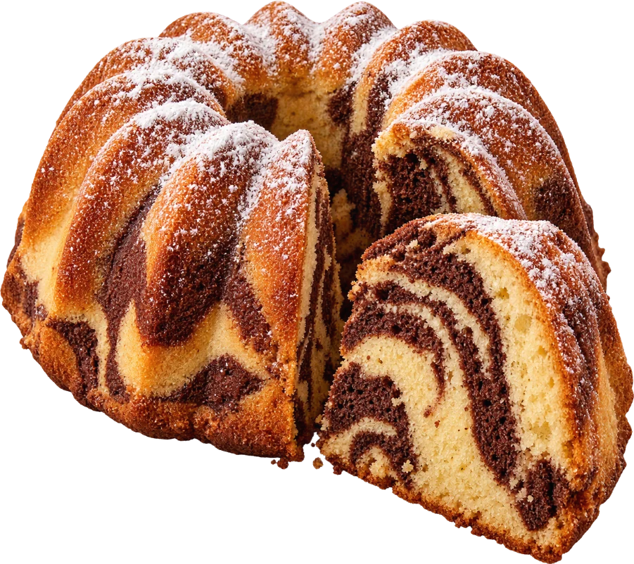
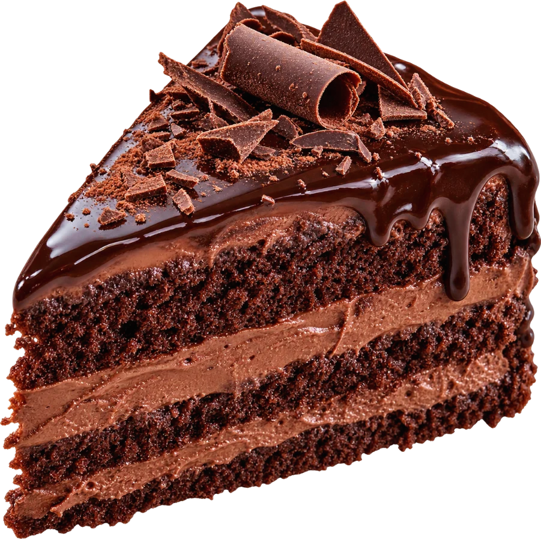
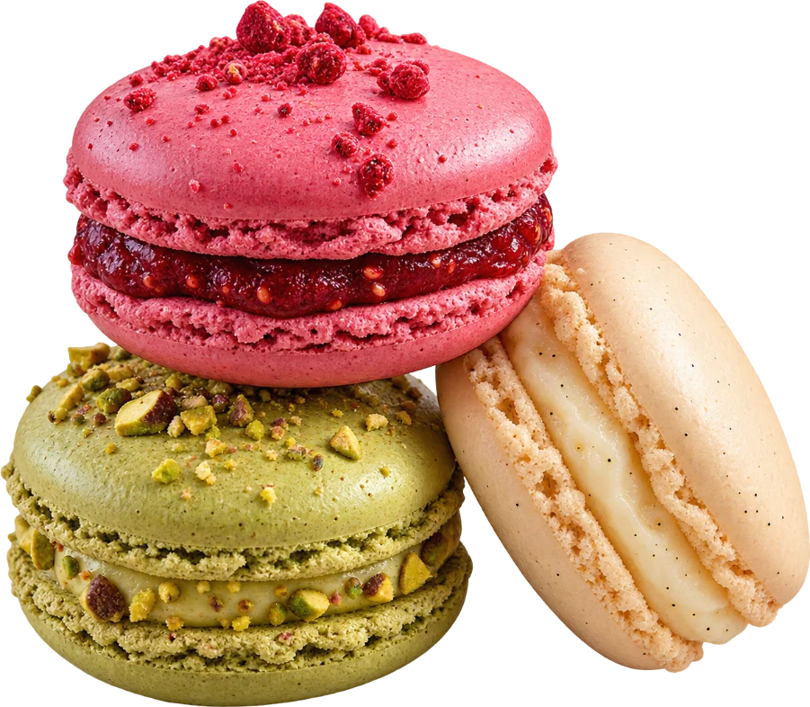
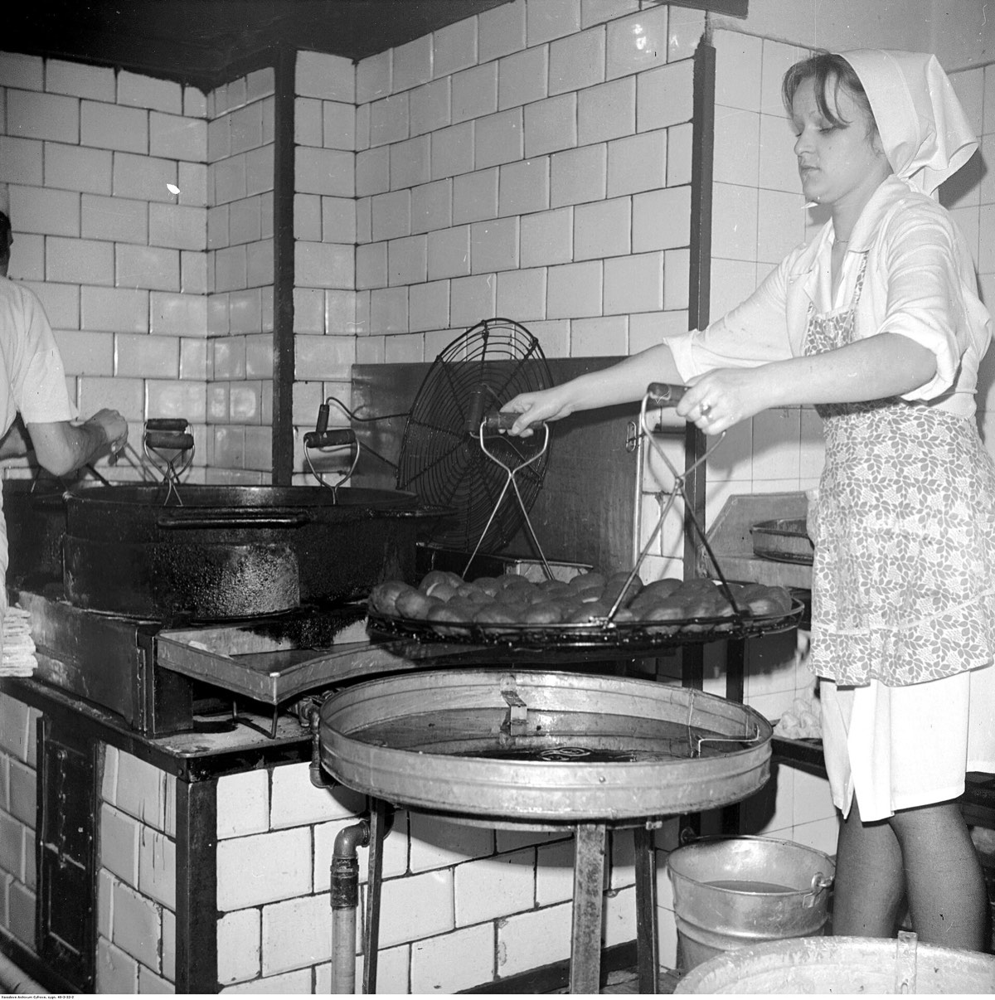

Prawdziwe masło, nie margaryna
Kruszonkę, od której mamy nazwę, robimy z masła, mąki i cukru w proporcji jeden do jednego do jednego. Jak u babci Ireny, która zaczęła piec w 1991 roku w kuchni na Bałutach.


Dla Ciebie
Rodzinna cukiernia w Łodzi. Pieczemy na maśle i jajkach od wiejskich kur, codziennie od piątej rano, w trzech cukierniach naraz.
tyle ciastek pieczemy dziennie
Wszystko powstaje w jednej pracowni na Bałutach i o 6:30 jedzie do trzech cukierni. Czego nie sprzedamy do wieczora, oddajemy do jadłodzielni przy Zgierskiej.
Zamówione przez stronę ciastka odbierasz w wybranej cukierni, bez kolejki.

święto na co dzień
Serniki, babki i ciasta na kawałki albo w całości.
Zobacz
chrupiące i miękkie
Kruche z dżemem, makaroniki i babeczki do kawy.
Zobacz
z różą, jak trzeba
Pączki z różą, drożdżówki z kruszonką, chałka w piątek.
Zobacz
święto nie czeka
Zaprojektuj tort na urodziny, chrzest albo ślub.
Projektuj

cały nasz przepis to
Kruszonkę, od której mamy nazwę, robimy z masła, mąki i cukru w proporcji jeden do jednego do jednego. Jak u babci Ireny, która zaczęła piec w 1991 roku w kuchni na Bałutach.


Pierwsza partia wychodzi z tłuszczu o 5:40, druga o 11:00. Nadziewamy je ręcznie, różą z płatków, którą gotujemy latem na cały rok.

słodkie odkrycia
przyjdź po ciastko